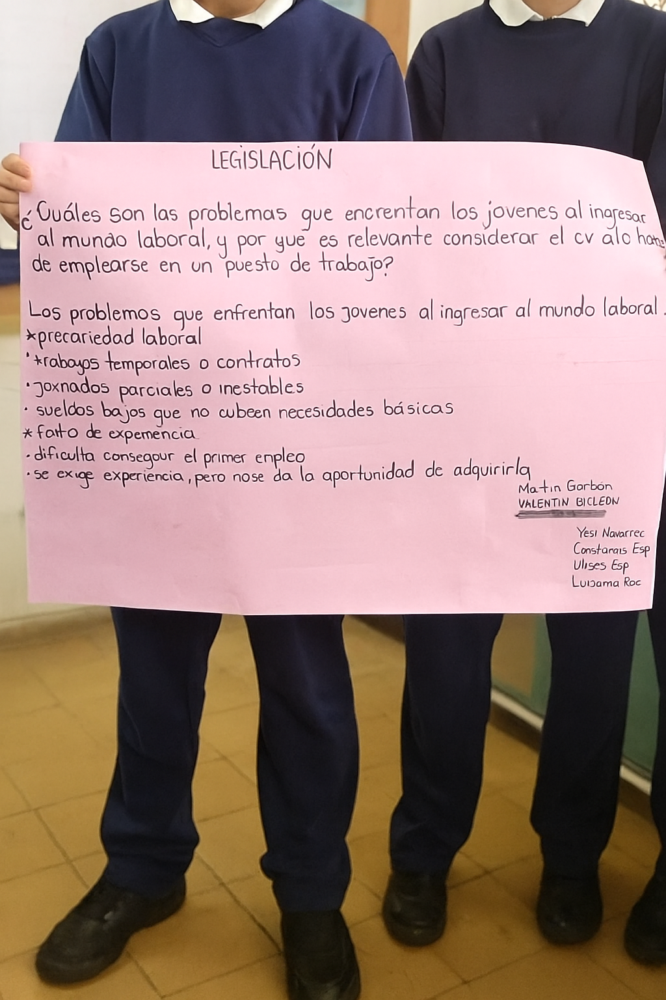
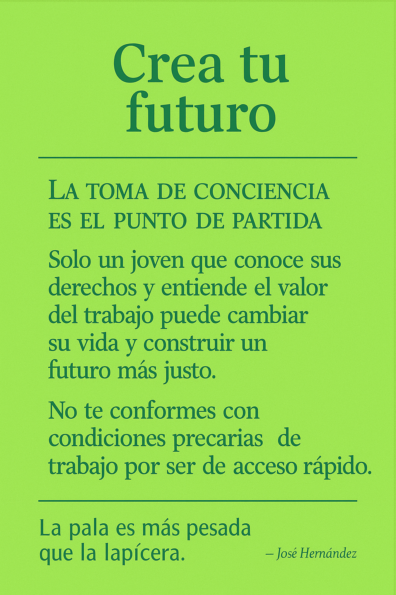
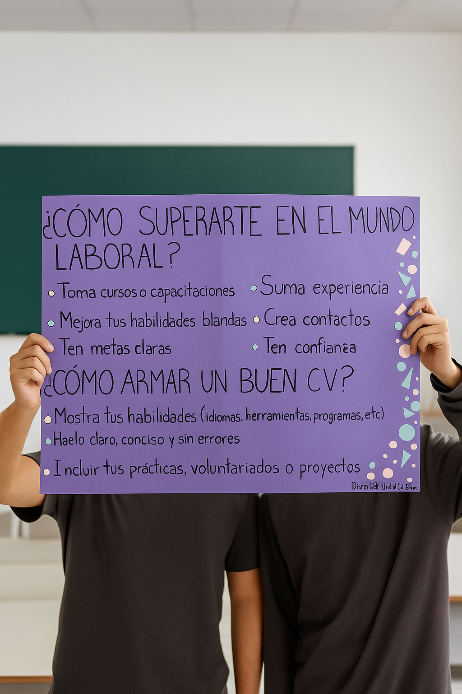
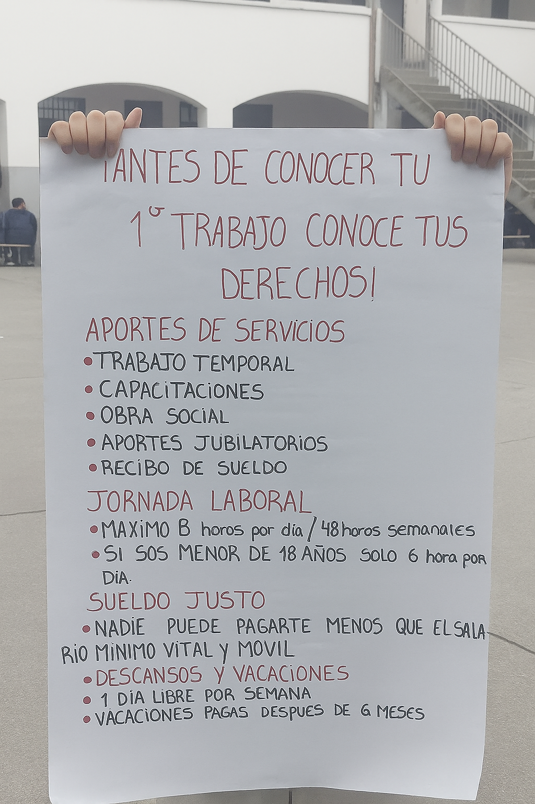

Juventud en cambio: Desafíos y oportunidades en el mercado laboral de América Latina y el Caribe
Este informe ofrece un análisis integral sobre la situación del empleo juvenil en América Latina y el Caribe. Desde un enfoque multidimensional, combina datos cuantitativos sobre los principales indicadores laborales con valiosas perspectivas cualitativas obtenidas mediante entrevistas y grupos focales con jóvenes. Asimismo, examina la evolución de las políticas laborales dirigidas a este grupo etario e identifica las brechas persistentes, los desafíos emergentes y las oportunidades para fortalecer las respuestas mediante el diálogo social.
Problemas que enfrentan los jóvenes al ingresar al mundo laboral y la importancia del currículum de vida
El ingreso de los jóvenes al mundo laboral constituye un desafío complejo y multifacético. Muchos se enfrentan a precariedad laboral, trabajos temporales o por contrato, jornadas parciales o inestables, y sueldos bajos que no alcanzan a cubrir sus necesidades básicas. Esta situación se ve agravada por la falta de experiencia laboral, un requisito que frecuentemente se exige para acceder al primer empleo, generando un círculo difícil de romper: los jóvenes necesitan experiencia para conseguir empleo, pero no se les brinda la oportunidad de adquirirla.
Otros problemas incluyen la competencia elevada por los puestos disponibles, la presión para adaptarse rápidamente a entornos laborales dinámicos y la necesidad de equilibrar estudio y trabajo. En este contexto, los jóvenes deben demostrar habilidades técnicas, competencias blandas, motivación y capacidad de aprendizaje constante, aunque muchas veces no cuentan con referentes o programas de orientación laboral que faciliten esta transición.
Frente a estas dificultades, el currículum de vida se vuelve un recurso fundamental. Este documento no solo refleja la formación académica y laboral, sino también la experiencia personal, habilidades adquiridas, logros, proyectos y aprendizajes relevantes obtenidos en distintos ámbitos de la vida. Considerar el currículum de vida a la hora de emplearse permite al joven presentar un perfil integral, destacando competencias transferibles, actitudes positivas y potencial de desarrollo, incluso ante la falta de experiencia formal. Además, ayuda a los empleadores a reconocer el valor de las experiencias diversas, entendiendo que la formación de un trabajador no se limita únicamente a su historial profesional previo.

Imagen 1. Actividad realizada por estudiantes (identidad protegida). Fuente: Material propio de la docente, CET N.º 31, Villa Manzano, 2025.
Superación de obstáculos y consejos para un buen currículum
Los jóvenes enfrentan numerosos desafíos al ingresar al mundo laboral, como la precariedad de los empleos, la falta de experiencia y la exigencia de competencias que aún no han podido desarrollar. Frente a esta realidad, es fundamental promover estrategias que permitan superar estas dificultades y construir un futuro laboral más sólido y equitativo.
“Como señalaron un grupo de estudiantes…”

Imagen 2. Actividad realizada por estudiantes (identidad protegida). Fuente: Material propio de la docente, CET N.º 31, Villa Manzano, 2025.
Este planteo resalta que la educación y el conocimiento de los derechos laborales son herramientas esenciales para empoderar a los jóvenes y generar mejores oportunidades. Además, la adquisición de experiencia a través de prácticas profesionales, empleo formal y participación en proyectos educativos permite desarrollar competencias valoradas por los empleadores.
3 claves para un buen currículum
formación y competencias adquiridas: Incluir estudios, cursos, prácticas profesionales y proyectos académicos relevantes, enfatizando habilidades técnicas y blandas que aporten valor al puesto deseado.
Experiencias significativas, aunque no sean laborales: Participación en voluntariados, actividades escolares o proyectos personales demuestra compromiso, responsabilidad y capacidad de aprendizaje.
Logros y resultados concretos: Señalar contribuciones específicas en trabajos, proyectos o actividades, mostrando de manera clara cómo se aplicaron conocimientos y habilidades.
NOTA: Estas acciones permiten que el currículum refleje no solo la experiencia formal, sino también el potencial y la preparación integral del joven, facilitando su inserción en empleos dignos y promoviendo un desarrollo profesional sostenible.

Imagen 3. Actividad realizada por estudiantes (identidad protegida). Fuente: Material propio de la docente, CET N.º 31, Villa Manzano, 2025.
Mensaje final de concientización
Al ingresar al mundo laboral, es fundamental que los jóvenes conozcan y comprendan sus derechos. Como indicó un grupo de estudiante:

Imagen 4. Actividad realizada por estudiantes (identidad protegida). Fuente: Material propio de la docente, CET N.º 31, Villa Manzano, 2025.
Este mensaje resalta la importancia de la información y la conciencia laboral como herramientas clave para protegerse y construir un futuro profesional seguro y digno. Conocer los derechos laborales permite a los jóvenes exigir condiciones justas, aprovechar oportunidades de capacitación y garantizar que su desempeño se reconozca adecuadamente.
Frase inspiradora final:
“El trabajo digno comienza por conocer y defender tus derechos.”
Tarea unidad 2
Evaluación de Competencias y Capacitación Laboral
1. Evaluación de Competencias en el Trabajo
Se realiza un filtro inicial considerando la formación académica, la experiencia laboral previa y las habilidades que el candidato detalla. Permite identificar si el postulante cumple con los requisitos básicos del puesto.
Incluyen evaluaciones psicométricas, pruebas de personalidad, simulaciones prácticas y pruebas técnicas específicas. Estas herramientas permiten medir capacidades cognitivas, emocionales y competencias profesionales relevantes.
Espacios donde se evalúan la comunicación, la actitud, la motivación, la compatibilidad con la cultura de la organización y la capacidad de resolver problemas
Consiste en confirmar la información proporcionada por el candidato a través de antiguos empleadores o referencias laborales. Ayuda a validar experiencias previas y desempeño reportado.
Impacto de las evaluaciones:
Facilita la inserción laboral, ya que el trabajador se adapta mejor a las expectativas del puesto.
Contribuyen a la mejora continua, identificando competencias a fortalecer.
Reducen la rotación de personal, aumentando la productividad y la satisfacción laboral.
2. Exámenes Preocupacionales
En Argentina, los exámenes preocupacionales están regulados por la Resolución N.º 37/2010 de la Superintendencia de Riesgos del Trabajo (SRT) y se implementan para garantizar la aptitud médica del postulante, proteger la salud del trabajador y evitar riesgos laborales.
Tipos de exámenes:
Test psicológico
Evalúa la estabilidad emocional, personalidad y adecuación del perfil psicológico al puesto.
Test físico
Determina la condición física y capacidad para desempeñar tareas específicas.
Examen médico
Detecta enfermedades preexistentes y asegura que el puesto no genere riesgos adicionales.
Entrevista profesional
Evalúa competencias sociales, motivación y actitud frente al trabajo.
3. Reflexión sobre Capacitación Laboral y Filosofía de Aristóteles
“Lo que pensamos y creemos configura la forma en que percibimos el mundo e influye directamente en cómo actuamos.”
En el ámbito laboral, esta idea demuestra que las creencias y pensamientos del trabajador influyen en su desempeño. La capacitación laboral permite:
Transformar pensamientos negativos en positivos.
Aumentar autoestima y confianza del trabajador.
Mejorar habilidades y percepción del trabajo.
Incrementar eficiencia, motivación y satisfacción laboral.
Ejemplo aplicado
Una empresa que capacita a sus empleados en liderazgo puede transformar la percepción que tienen sobre sus capacidades, haciéndolos sentir más seguros para asumir responsabilidades. Esto mejora la productividad, la colaboración en equipo y la motivación general.
4. Conclusión
Las evaluaciones de competencias y los exámenes preocupacionales son herramientas clave para garantizar la selección adecuada del personal y la seguridad laboral.
La capacitación, alineada con la filosofía de Aristóteles, permite que los trabajadores desarrollen una percepción positiva de su trabajo, fortaleciendo sus habilidades, actitud y desempeño.
El enfoque integral de evaluación y formación asegura un ambiente laboral eficiente, seguro y motivador.